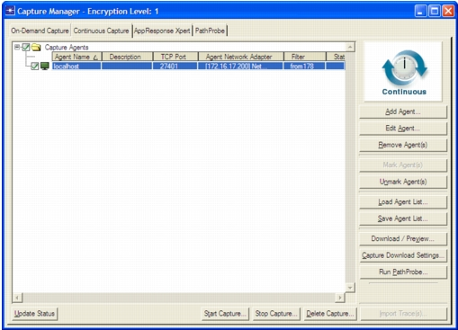

Continuous Capture Tabbed Page You can configure, run, and view continuous captures using the Continuous Capture page in Capture Manager. Figure 5-1 Capture Manager: Continuous Capture Page  Table 5-1 Capture Manager: Continuous Capture Page Item Description Add Agent… Add a capture agent to the agent list. For more information, see Creating a Capture Agent/Appliance List. Capture Download Settings… Specify the directory, on the local computer, where packet traces are to be stored. Additionally, you can specify the maximum size of downloaded packet trace files. Packet trace files that are larger than the specified size are broken into multiple files when downloaded. The default value is defined using the “Maximum trace file size in MB” preference. Delete Capture… Delete a continuous capture and remove the disk space reserved for the capture on the agent machine. For more information, see Deleting a Continuous Packet Trace. Download / Preview… Preview a continuous capture and extract relevant data from the selected agent(s). For more information, see Continuous Capture: Preview and Download. Edit Agent… Configure the selected agent in the Capture Agents treeview. Import Trace(s)… Import the selected packet traces. For more information, see Creating a Transaction Analyzer Model. Load Agent List… Load a saved agent list from a file. The name of the agent list displays at the top. Mark Agent(s) Enable selected agents so that they capture during the next capture task Remove Agent(s) Remove the selected agent(s) from the Capture Agents treeview. Save Agent List… Save the current agent list and configuration settings to an agent list (*.agents) file. For more information, see Creating a Capture Agent/Appliance List. Start Capture… Start a continuous capture on the checked agent(s). Stop Capture… Stop a continuous capture that is currently running. For more information, see Stopping a Continuous Capture. Unmark Agent(s) Disable the selected agents so they do not capture during the next capture task Update Status Display information about each enabled agent, including: the number of active continuous captures, the agent version/build, and the operating system of the host computer.